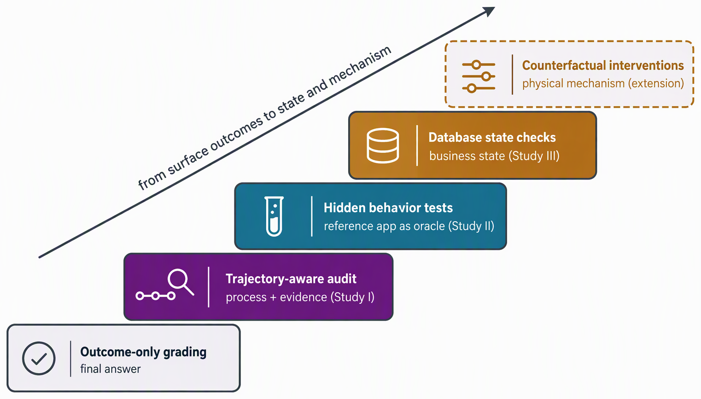

四、论文进度安排及预期达到目标
□ 创新点：验证证据由最终结果扩展到过程、行为、状态与机制

互补的验证证据：答案 → 过程 → 行为 → 业务状态 → 物理机制（示意图）
01
已形成
混合能力范式下的轨迹感知可信评测
以单通道基线与人工审查筛选需协同的任务，轨迹审计与结果验证结合，揭示编排与自我验证短板
02
已形成
以参考应用为验证参照的可扩展复刻训练
开源 GUI 应用经审核转化为"环境 + 隐藏行为测试"，为混合行为提供可验证筛选信号
03
待验证
面向真实世界的环境扩展与物理落地验证
验证从结果审计扩展到业务状态校验（职业环境）与反事实干预（物理仿真）
三点创新共享同一原则：以可执行、可验证的证据度量与训练智能体，而非依赖结果表象